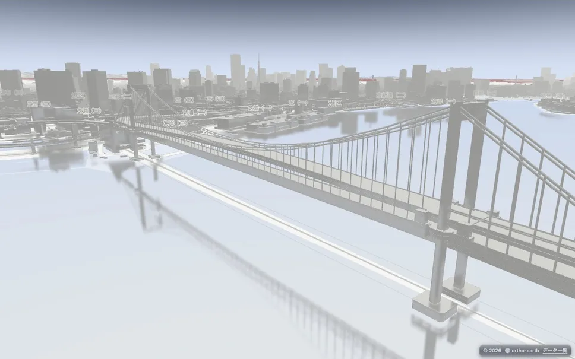
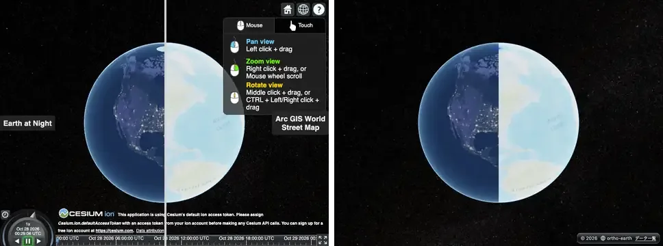
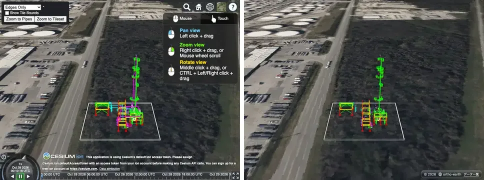

2.1 で MapLibre をフォローし、2.2 で Cesium をフォローし、2.3 で独自の描画機能を実装した。ホップ・ステップ・ジャンプである。その上で、2.3 でも二つへのフォローはきちんと続けている。
新しい描画
map.setPostChain に、Cesium にも MapLibre にも無い六つの効果が加わった（WebGPU だけ）。画面の映り込み（SSR）、接触影、高さの霧、光芒、雨、イラスト風である。
どれもエンジンが前から持っていた深度と法線を使い回したもので、SSR が約 380 行、残りの五つで約 720 行、それぞれ 1 日で入った。

map.setPostChain([{ type: "ssr" }])：東京湾にレインボーブリッジと街が映る。
Cesium へのフォロー
v2.2.0 のあとも、Sandcastle の撮り直しは止まらなかった。v221 から v244 まで、全 309 本の撮り直しを 20 回あまり回し、そのたびに家族ごとに直した。
| 撮影 | 3 | 2 | 1 | 0 | 何が入ったか |
|---|---|---|---|---|---|
| v2.2.0 | 190 | 107 | 0 | 0 | 前回の最終の数（採点 297 本） |
| v221 | 196 | 101 | 0 | 0 | v2.2.0 の直後の撮り直し |
| v233 | 207 | 91 | 0 | 0 | 画像の左右分割、3D Tiles の辺の表示、地形に載せる図形、時刻つき WMTS（#845〜#857） |
| v238 | 220 | 77 | 0 | 1 | Sandcastle の画像の配信、矩形の回転、建物で止まる 3D の線、Cesium と同じ画像の細かさ（#863〜#866） |
| v244 | 223 | 75 | 0 | 0 | 閉じた図形の表裏、3D Tiles の境界球、Bing の画像、半透明の 3D Tiles の影（#869〜#900） |
注：表は検定が出した数（採点 298 本）。Sandcastle のギャラリーは、目で確かめた例を足した 303 本で、3/2/1/0 = 226 / 77 / 0 / 0 になっている。途中の v243 では画像の変更（#894）で一度 0 が 7 本に増えたが、検定が見つけて #900 で戻した。
左が Cesium、右が ortho-earth。画像の左右分割（splitDirection）と、3D Tiles の辺の表示。


MapLibre へのフォロー
Cesium を追いかけている間に、MapLibre の側がどう見えているかも測り直した。ortho-earth は、もともと MapLibre の書き方で地図を描くところから始まっている。公式例 139 本を、同じやり方で並べた。本物の MapLibre GL JS 6.11.2 で撮った絵（r7）と、@ortho-earth/globe の MapLibre の口で同じコードを動かした絵を、同じ時刻・同じカメラで比べる。段の付け方は Cesium と同じで、採点できない 2 本を外した 137 本を数える。
今朝（v2.2.x の main）に測り直すと、3/2/1/0 = 85 / 40 / 12 / 0 だった。一部が動かない例が 12 本もある。Cesium で 0 にしたばかりなので、これは見過ごせない。Cesium は 3D 同士の調整だが、MapLibre は 2D の地図を球に載せる話なので、そう簡単にはいかない。
| 時点 | 3 | 2 | 1 | 0 | 何が入ったか |
|---|---|---|---|---|---|
| v2.1.0 | 79 | 47 | 11 | 0 | 前に /maplibre/ を作った時の数 |
| 今朝 | 85 | 40 | 12 | 0 | v2.2.x の main をそのまま測り直した数 |
| 昼 | 86 | 45 | 6 | 0 | メルカトルの既定の制約、maxZoom 22、MapLibre の振り付けの flyTo、束ねた点の問い合わせ、傾けた地図の heatmap の当たり、高さ 0 の押し出しの屋根 |
| 午後 | 87 | 45 | 5 | 0 | 縦の視野角を MapLibre と同じ 36.87° に |
| v2.3.0 | 91 | 43 | 3 | 0 | 注視点の高さの球、地形の上の unproject を光線の歩きに、地形の誇張を注視点にも。OSM に拒まれていた本物の絵 4 本の撮り直し |
注：WebGPU（Mac の実 GPU）での数。WebGL2 でも全部を流し、段 1 の 3 本は同じ。違うのは記号の上の標本 1 点で段 3 から 2 になる 2 本だけだった。
MapLibre の結果
v2.3.0 の 137 本は 3/2/1/0 = 91 / 43 / 3 / 0。一部が動かない例は 12 本から 3 本になった。全部の絵は MapLibre のギャラリーで、本物と並べて見られる。ギャラリーの形も Sandcastle と揃え、上段と下段の説明は日本語と英語で読めるようにした。
左が本物の MapLibre、右が ortho-earth（v2.3.0）。
set-center-point-above-ground：地形の無い地図で注視点を 541 m の宙に置く例。絵は前から同じだったが、経緯度と画面の点の行き来が 279 px ずれていた。MapLibre は注視点の高さの面を「地面」とみなして計算する。MapLibre の口だけ、それに揃えた（段 1 → 3）

display-a-hybrid-satellite-map-with-terrain-elevation：急な山の衛星図。クリックした点が別の斜面に飛び、数 km ずれていた。視線を手前から奥へ歩いて、最初に地面をまたぐ所を詰める方式に変えた（問い合わせ 110/160 → 158/160、段 1 → 2）

add-a-3d-model-to-globe-using-threejs：three.js の模型を地球儀に立てる例。球の上の custom 層の軸が MapLibre と x と z で逆で、アンテナが出ていなかった

作ったもの
- MapLibre の口：縦の視野角 36.87°、注視点の高さの球（地形なし＋centerElevation）、地中の覆いを出さない、メルカトルの既定の制約、maxZoom 22、MapLibre の振り付けの flyTo／easeTo
- 地形の上の unproject：光線の歩き（同期で読める raster-dem）と、従来の反復（quantized-mesh と読み口を通る DEM）の使い分け
- 地形の誇張を注視点の高さと queryTerrainElevation にも掛ける（MapLibre と同じ）
- 球の上の custom 層の軸を MapLibre に揃える（three.js の模型）
- 描いた絵に出ない custom 層を目で確かめた記録（eyechecked.json）と、段が下がったら落ちる爪車（known.json）
- /maplibre/ と /sandcastle/ のギャラリーを同じ形に、上段と下段は日英
- Cesium の側：画像の左右分割、3D Tiles の辺の表示、建物で止まる 3D の線、閉じた図形の表裏、半透明の 3D Tiles の影
- 描画：画面の映り込み（SSR）、接触影、高さの霧、光芒、雨、イラスト風（WebGPU）
諦めたもの
- add-live-realtime-data：動き続ける例で、撮った瞬間のカメラの位置が本物と揃わない
- display-html-clusters-with-custom-properties：束ねた丸が本物 12 個、こちら 13 個。束ね方の差を追い切れていない
- navigate-the-map-with-game-like-controls：MapLibre は絵に描いていない建物も問い合わせで返す。こちらは描いた物だけを返す方を取った
- quantized-mesh を raster-dem として読む例は、光線の歩きを使わない。標本ごとにタイルを復号して待つので、160 点の問い合わせが 25 秒かかった
地形の上でクリックした位置を求める
今回いちばん手間取ったのは、地形の上でクリックした点を経緯度に戻す処理だった。急斜面を直すと quantized-mesh の例が遅くなり、遅さを直すと位置がずれる。直すたびに、別の例で新しい不具合が出た。
それでも、本物と並べて撮る検定と、段が下がったら落ちる爪車があったので、どこで何が壊れたかはその場で分かった。調べるうちに、地形の誇張が注視点に掛かっていないという、前からの不具合も見つかった。最後は、同期で読める地形だけを新しいやり方にして、ほかは前の解き方に戻した。深追いをやめるのも、方法のうちである。
メルカトルを捨てたこと
2.2 の終わりに「Ortho Earth ＝ MapLibre × Cesium − メルカトル ＋ α」という式を書いた。振り返ると、この式でいちばん効いていたのは「− メルカトル」だったのかもしれない。地図を最初から平面ではなく球の上に描いてきたので、MapLibre の 2D の例も Cesium の 3D の例も、同じ一つの描き方で受け止められた。2D と 3D を別々に作ってつなぐのではなく、メルカトルを捨てたこと。それが今回の 2D と 3D の統合の本質だったと思う。
公開：@ortho-earth/globe・@ortho-earth/core 2.3.0、@ortho-earth/cesium 0.2.0（globe 2.3 以上）、@ortho-earth/voxel 0.6.1。使い方は 2.2 のまま（npm i @ortho-earth/globe@2.3）。